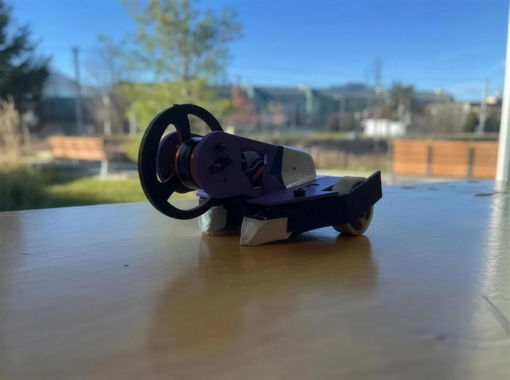
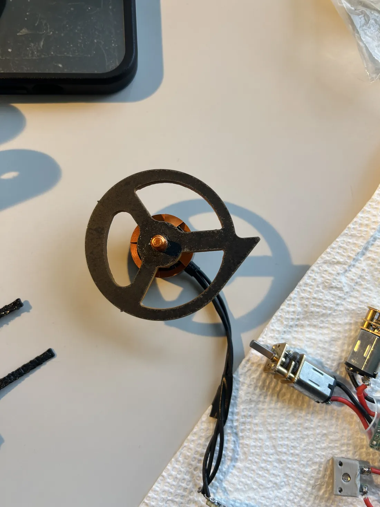
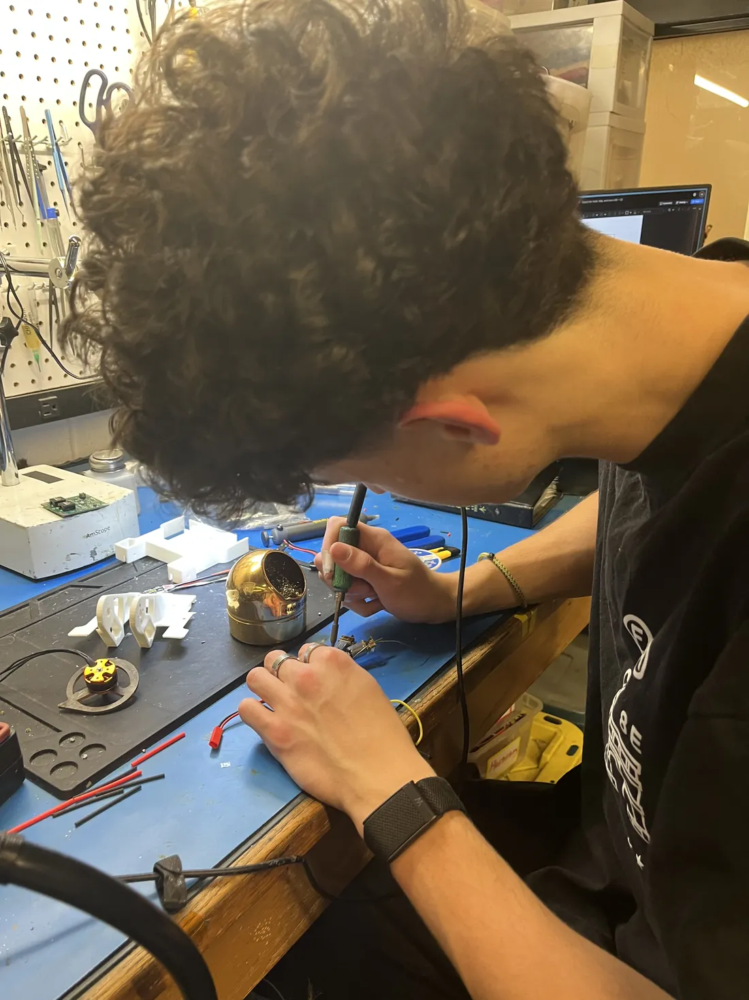
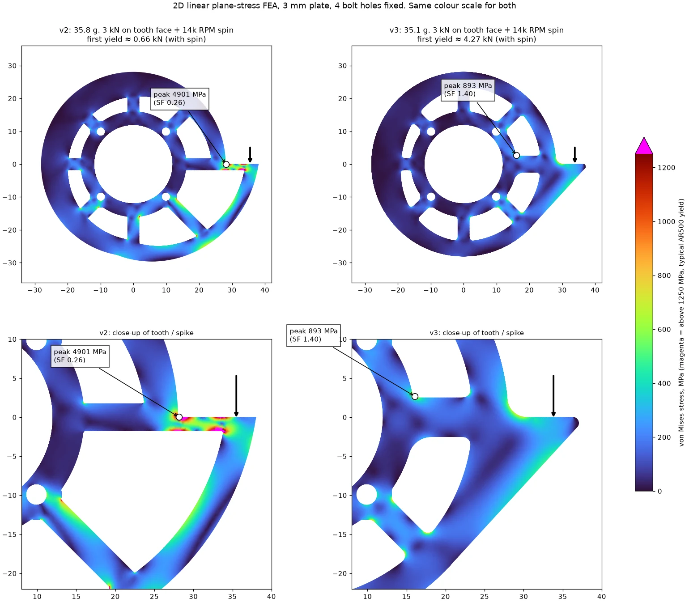
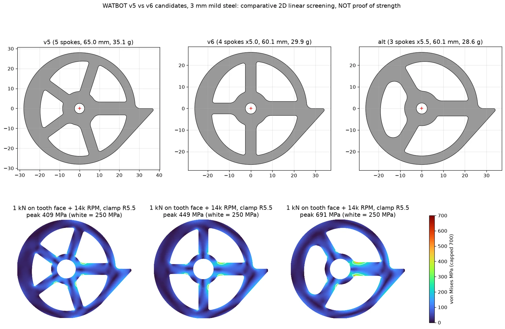
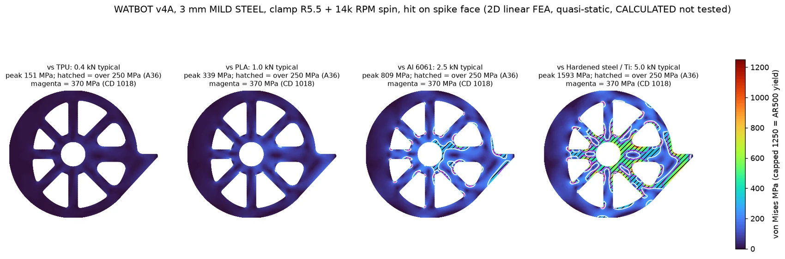
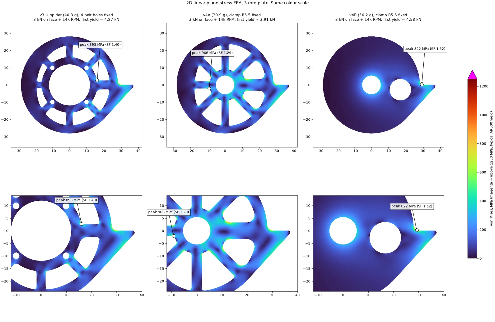
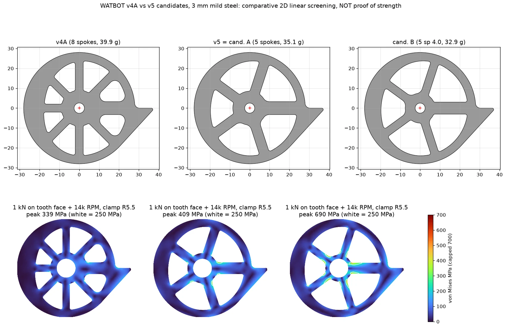
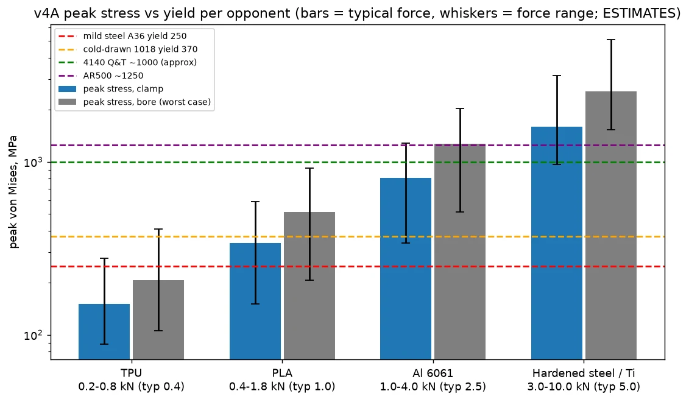

moonwalker
A 150 g “fairyweight” combat robot with a vertical spinning blade, built with WATBOTS, the University of Waterloo’s combat robotics design team.
- role
- Weapon design, electronics, assembly, team coordination
- team
- 5 people, WATBOTS
- when
- Fall 2026
- built with
- 3 mm mild steel blade (laser cut), PLA+ and TPU printed chassis
- result
- Competed. Lost fight 1, forfeited fight 2.

what i did
- Designed the weapon: a 60 mm vertical spinner in 3 mm mild steel, the material the competition rules require.
- Took the blade from an eight-spoke, 39.9 g first prototype through five-, four- and three-spoke versions to 28.6 g, after design review asked for fewer, thicker spokes and a target of about 28 g.
- Ran 2D stress simulations on every version to compare bending at the spoke-to-hub fillets, and estimated hits from TPU, PLA, aluminium and hardened-steel opponents.
- Added a counterweight for the asymmetric tooth so the blade is balanced about the spin axis, sized the bore to 5.05 mm for the motor shaft, and exported the DXF for laser cutting.
- Soldered and wired the electronics and assembled the robot.
- Kept the team organised with to-do lists, cost tracking and shared files, and helped with the chassis design.


stress-testing the blade
I compared every version with a 2D linear stress model of the 3 mm plate: a hit on the tooth face plus a 14,000 RPM spin. It is a way to compare shapes, not proof of strength, and none of it was physically tested.



what went wrong
- A few days before the event the robot was 10 g over the 150 g limit, with almost no room inside for the electronics. We redesigned it the day before and reprinted and rewired the whole robot.
- On competition day it did not run for four hours. Each fix exposed the next problem: solder joints, dead motors, wiring.
- It was front-heavy, so its nose dug into the arena floor. It drove better backwards, which is where the name comes from.
- It was flipped and lost its first fight. A motor died over lunch, and in the second fight screws worked loose and we had to forfeit.
what i’d do differently
Leave a weight buffer from the start, plan space for wiring in CAD instead of fitting it in afterwards, test the full robot earlier, and use thread locker on every screw.
what i learned
With a fixed material, geometry is your only lever: every gram you remove costs strength somewhere. And things rarely work the first time, so planning for failure and debugging fast matter as much as the design.
the weapon design, in more detail
For our 150 g fairyweight I designed a vertical spinner weapon, inspired by the robot Ferris Wheel. The competition rules required 3 mm mild steel, so every design choice was a trade-off between weight, strength and balance.
My first prototype had eight spokes and came in at about 40 g. When the reviewers looked at it, they told me to use fewer, thicker spokes and to cut the weight to around 28 g. I iterated through a five-spoke version, a four-spoke version and a three-spoke version, and shrank the blade to 60 mm across. For each version I ran 2D stress simulations to compare where it would bend, especially at the spoke-to-hub fillets, and I estimated what impacts against PLA, TPU and metal opponents would do to it.
Because the tooth is asymmetric, I added a counterweight and balanced the blade in CAD so its centre of mass sits on the spin axis, which keeps it from vibrating. I sized the bore to 5.05 mm to fit the motor shaft and exported the final DXF for laser cutting.
The biggest thing I learned is that with a fixed material, geometry is your only lever, and every gram you remove costs you strength somewhere. Iterating on feedback quickly mattered more than getting it perfect the first time.


